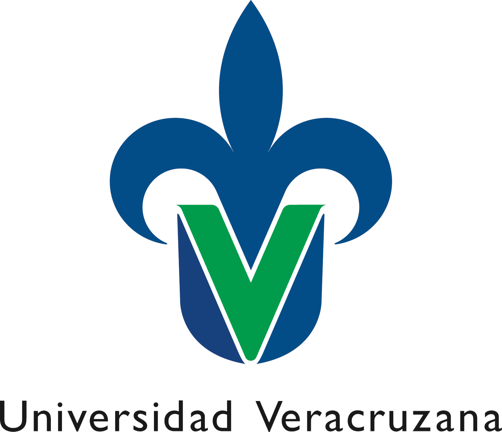
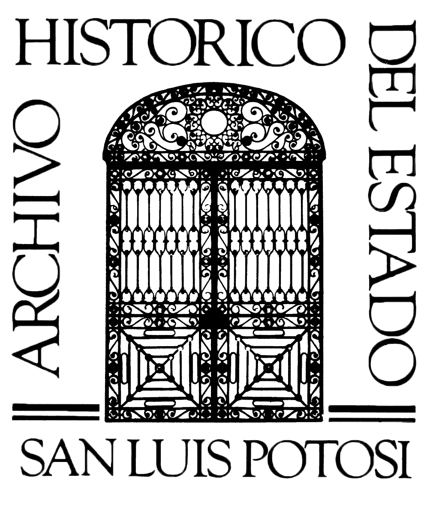
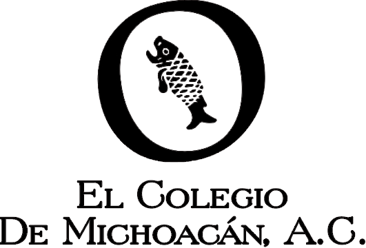
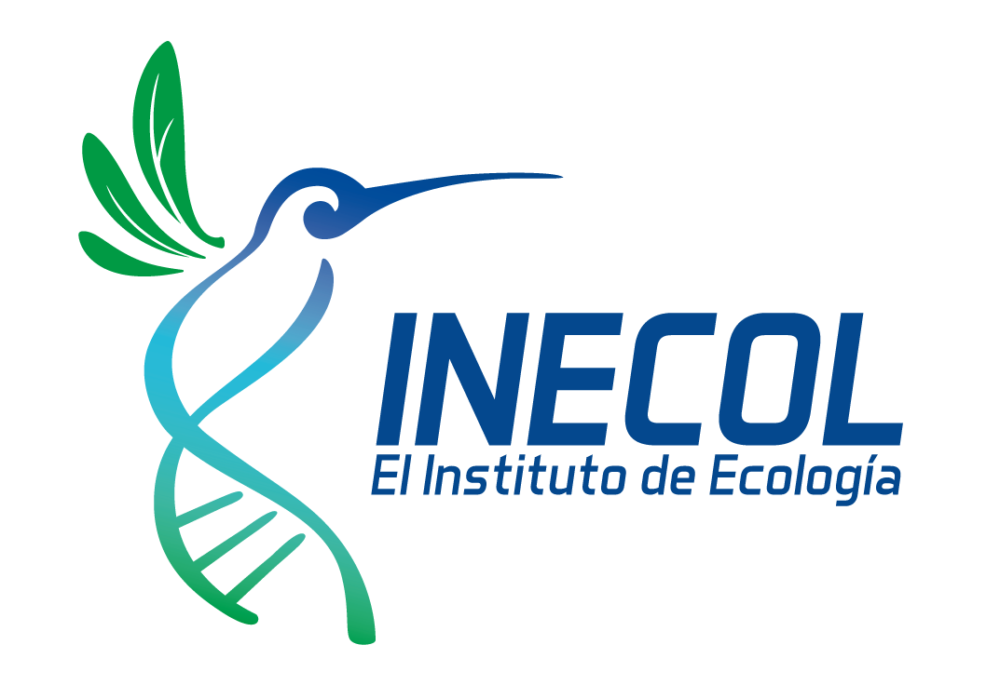
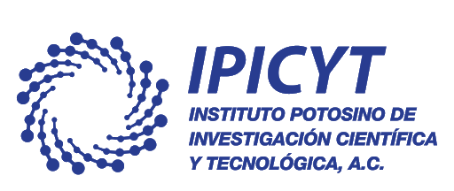
 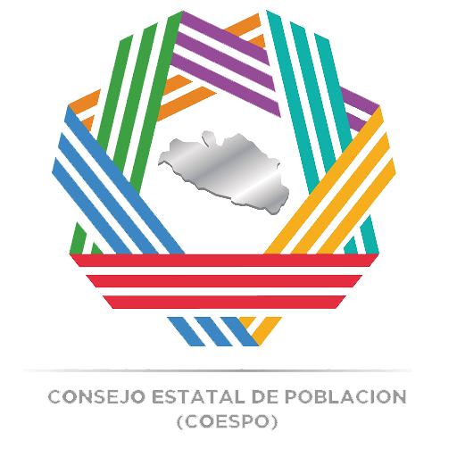
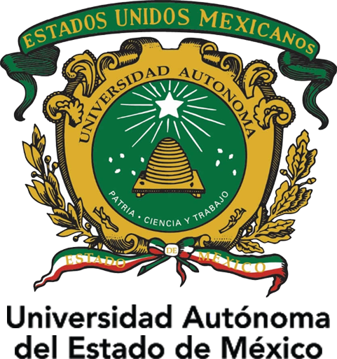
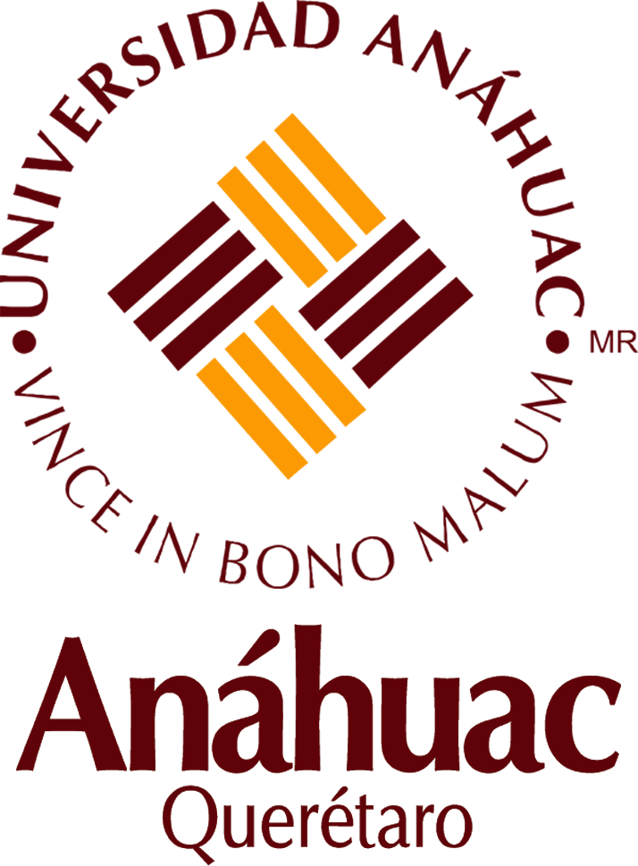
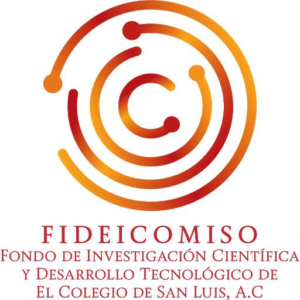
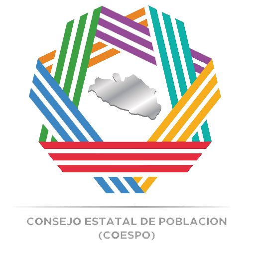
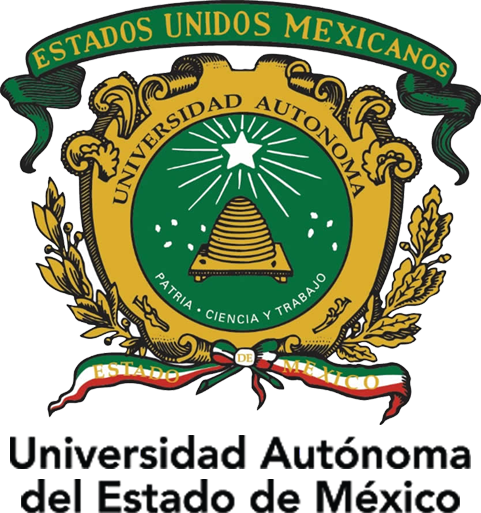
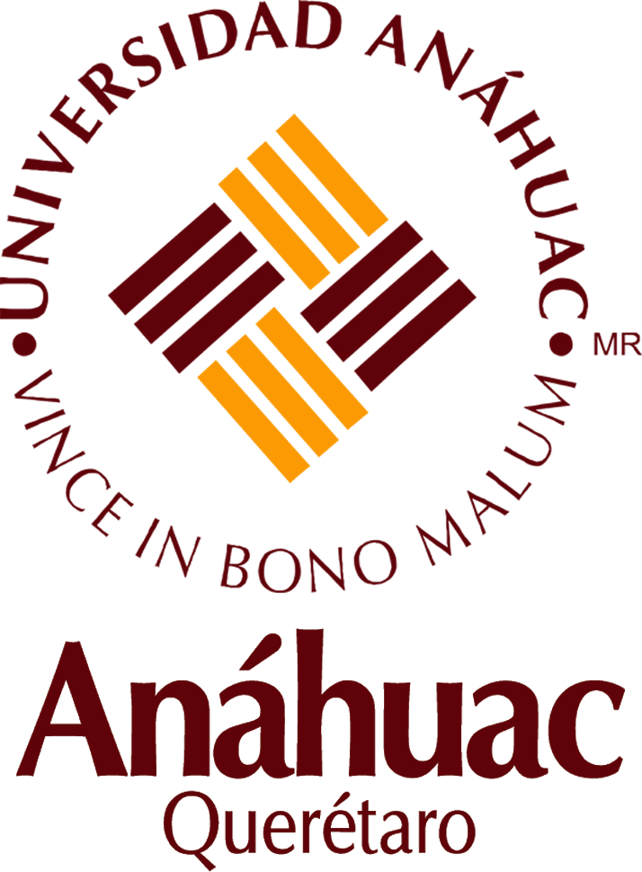
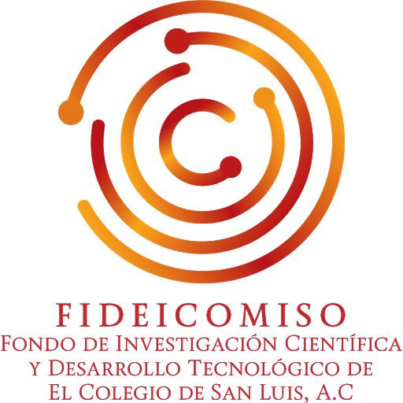
Sitio web educativo sin fines de lucro.
Derechos reservados,2021,Fideicomiso Fondo de Investigación Científica y Desarrollo Tecnológico de El Colegio de San Luis.
Proyecto:"El Patrimonio tangible e intangible del Estado de San Luis Ptotosi.
Una propuesta para conocer y promover el cuidado del legado natural, histórico y cultural"
El Colegio de San Luis, A.C.
Contacto:sergio.canedo@colsan.edu.mx y jortizescamilla@gmail.com
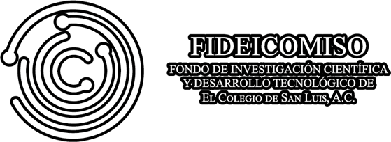